Spring 2026 · ACAD-445, Designing Products for Licensing
Alcove
Problem statement
A young adult who feels stuck about furnishing a first apartment needs to find one piece that works for work, living and hosting, but most furniture is cheap, bulky or single-use.
How It Went
-
PurposeResearch
Furniture That Grows with You
Young adults furnishing their first apartment need furniture that's affordable and works for work, living and hosting, without taking over a small space. Most options make you pick: cheap but temporary, stylish but single-purpose, or functional but huge.
Our idea: furniture that works by day, lives by night, and hosts friends without crowding the room.
-
ResearchResearch
Julie and Alex
We built two personas from our interviews.
- Julie, a UX designer in a 500 sq ft downtown studio. Curated, warm neutrals, hosts small dinners. Hates visually heavy furniture and pieces that look too convertible.
- Alex, a junior marketing associate with a roommate, working from home 3 to 4 days a week. Wants something that feels adult and affordable. Hates bulky, wobbly lift-top tables.
-
ResearchResearch
The Gap
We mapped what's out there twice: simple versus complex, and compact versus space-consuming. The corner we wanted, simple, multi-functional and compact, was basically empty.
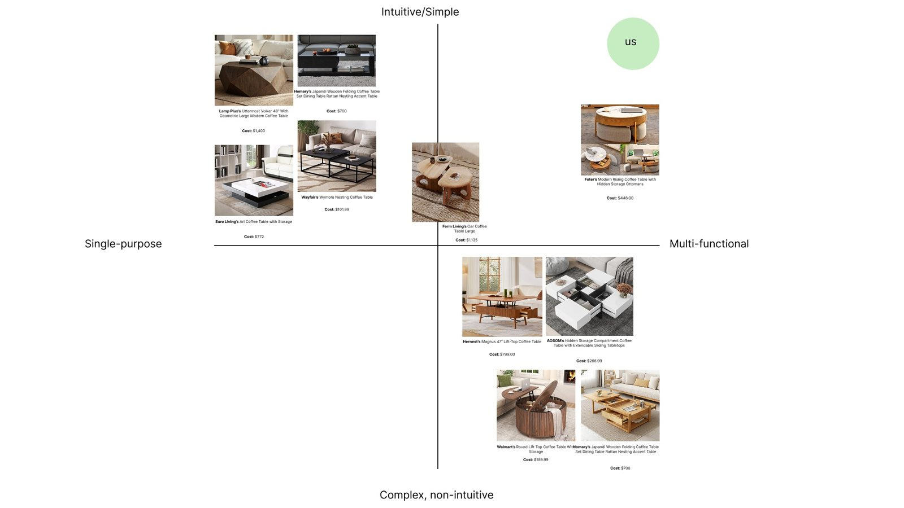
Simple and multi-functional 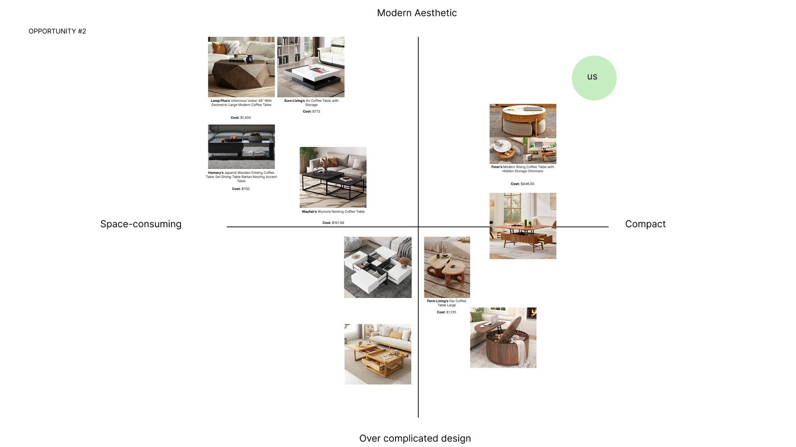
Modern and compact -
DefinitionDesign
How Might We
How might we design a coffee table that intuitively transforms between experiences without overwhelming a small apartment?
- Simple: one motion, no tools, stable for years
- Multi-functional: coffee table, work surface and dining
- Space-efficient: small when closed, never doubles its visual footprint
- Aesthetically pleasing: clean, neutral, premium
-
IdeationDesign
My Sketches
Two of my concepts: a charcuterie tray with removable ceramic dishes that fit together like puzzle pieces, basically adult Lunchables, and Jenga seats, small cushions that stack into one corner piece and make cleaning up kind of fun.
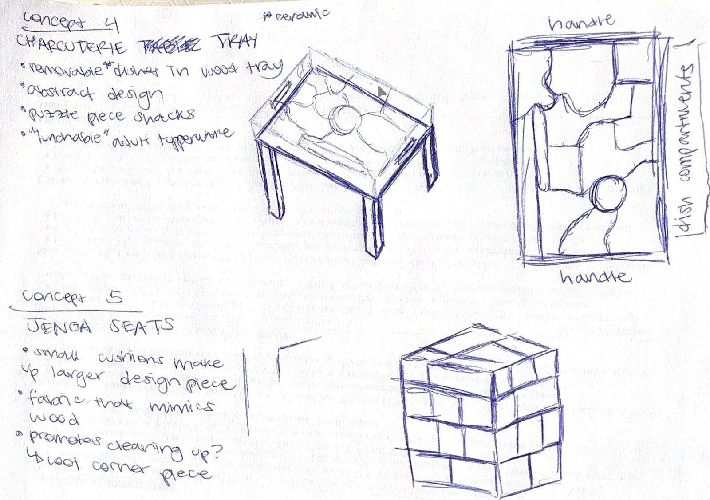
-
IdeationDesign
Other Directions
The team explored a rising top that separates private and social space, a game table with ottomans tucked underneath, and a boxy walnut nesting set with a glass top and an ottoman.
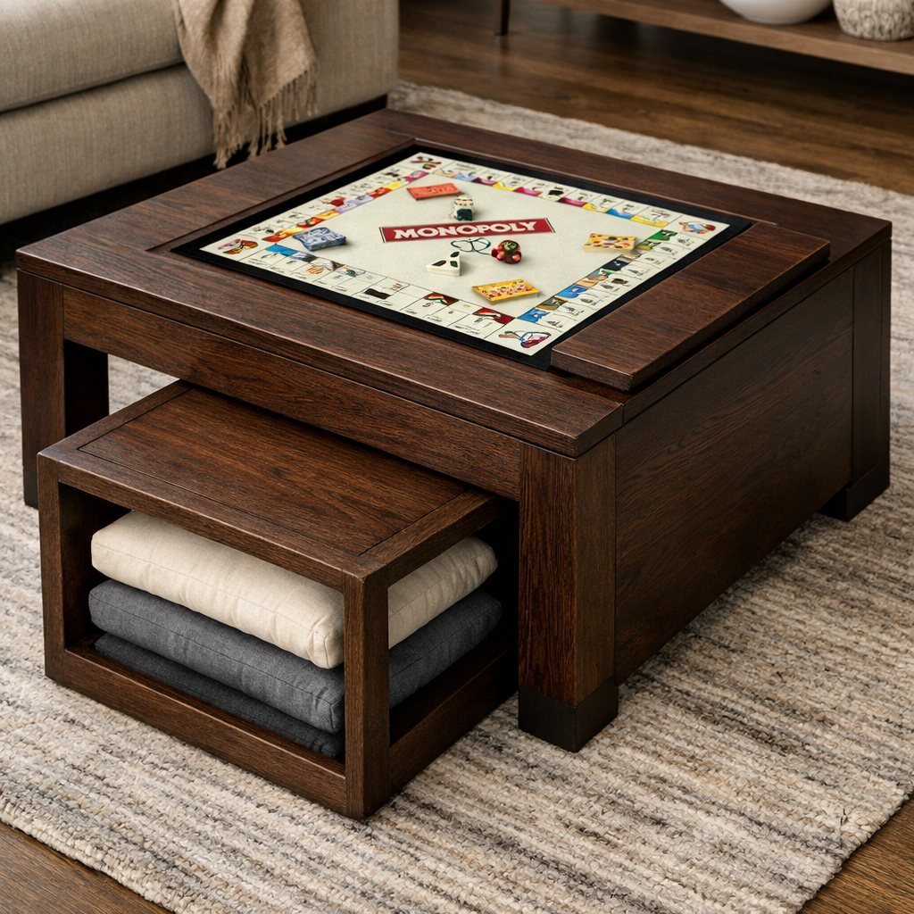
Game table 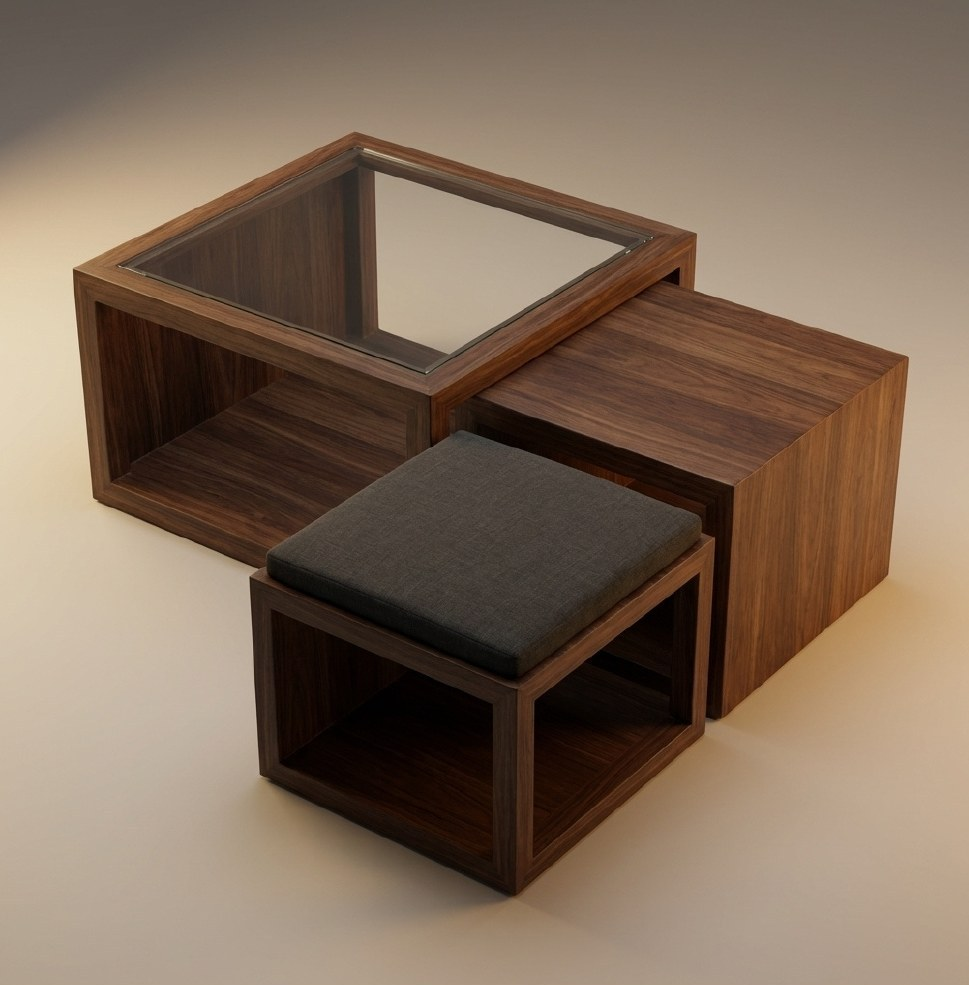
Walnut nesting set -
DevelopmentDesign
Waterfall Edges
We landed on three nesting tables with soft waterfall edges. The smaller tables slide out from under the largest one to expand the surface. No hardware, no moving parts.
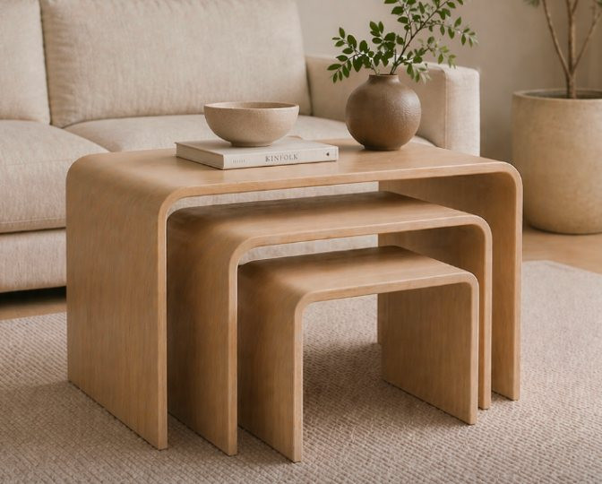
Direction 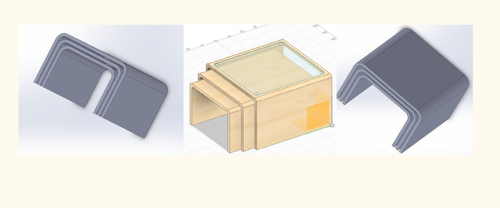
CAD -
DevelopmentTech
Making It
We 3D printed molds, bent and glued the wood layers, clamped them, and sanded and stained the finished pieces.
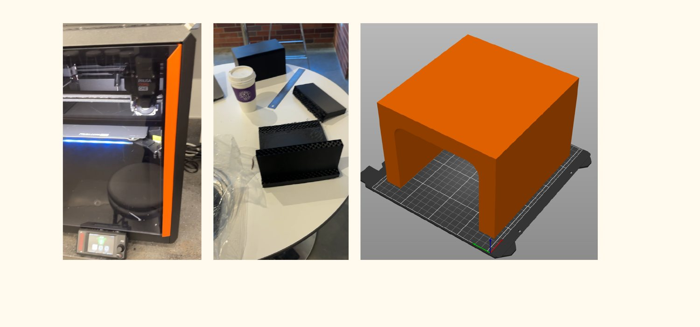
-
DevelopmentProduct
In the Shop
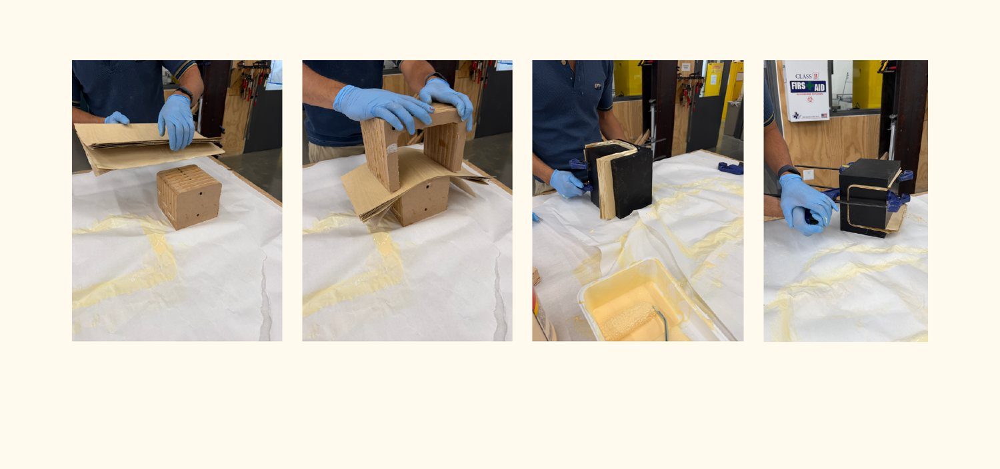
Pressing 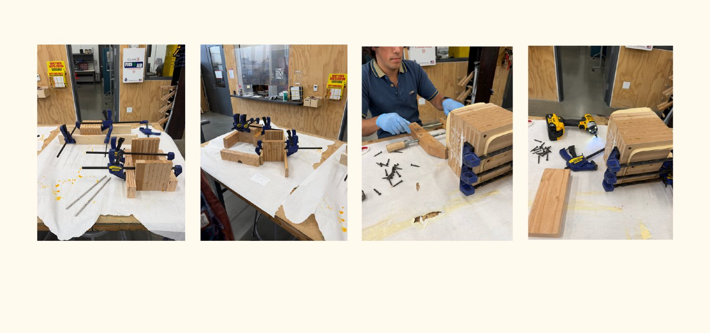
Clamping -
FinalProduct
Final Prototype
Built at 1/4 scale. The smaller table slides out from beneath the larger one to instantly expand the surface: compact, intuitive and clean.
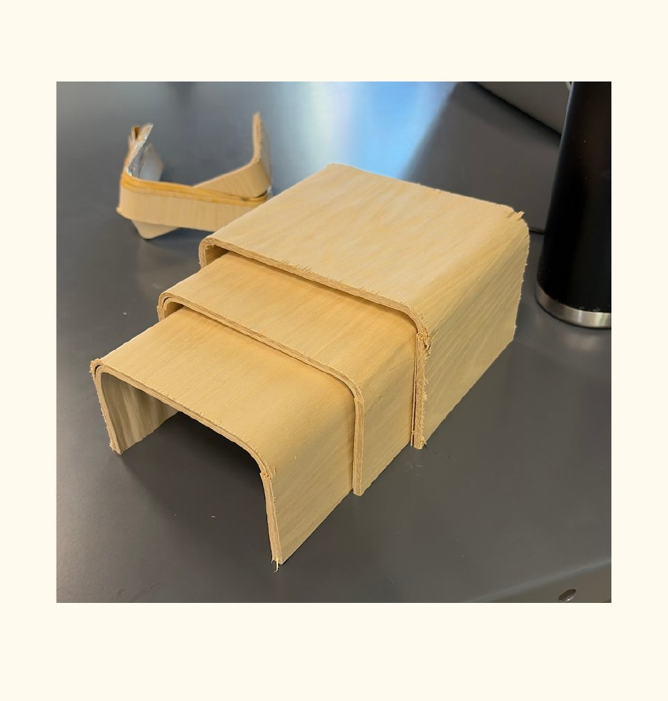
Before finishing 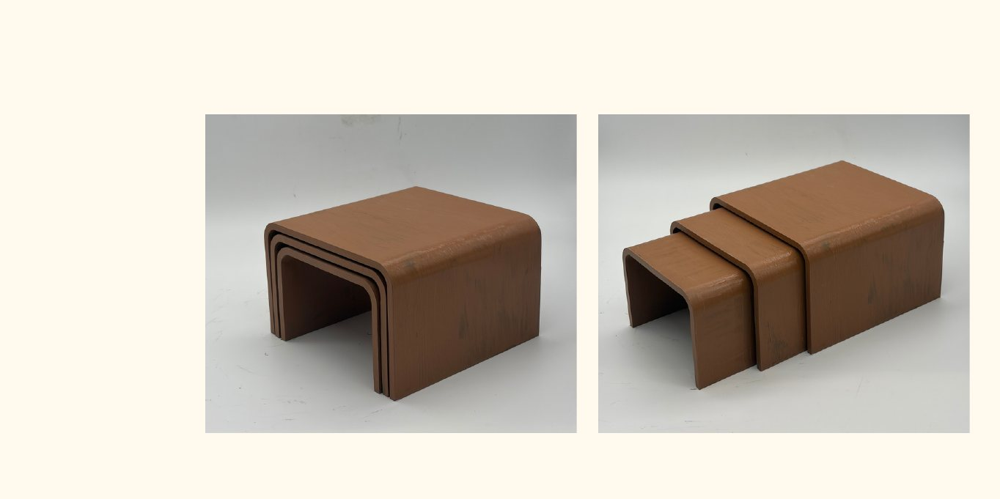
Finished -
FinalProduct
Alcove at Home
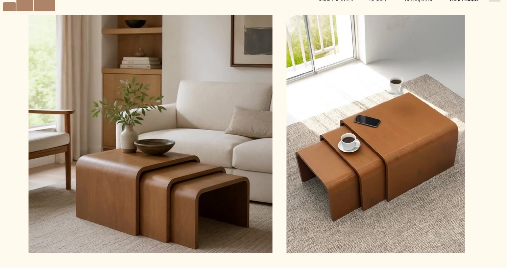